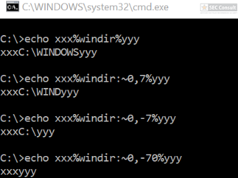

In the Windows cmd it’s possible to write ^ at any location in the command and cmd will completely ignore it. For example, “calc.exe” is the same as “ca^l^c”. It’s just important that ^ is not the last symbol and that two ^ symbols are not used after each other.
Instead of ^ the double quote can also be used and this has no restrictions (it can be the last character or used multiple times). For example, ^ca^”^”^lc^” will start the calculator.
The same applies to zero-length environment variables. An environment variable can be accessed via %name%. If the environment variable has a length of zero, “cal%name%c” would be the same as “calc”. Since environment variables don’t have per default a length of zero, this can’t be used directly. However, it’s possible to call substring on the environment variable with a special syntax (:~start,end). The following figure shows the “windir” environment variable and how substring can be used with negativ values to get a zero-length variable returned:

The following figure shows a combination of these techniques to hide that Powershell is started in version 2 (which was a long time helpful but should not be done anymore on latest Windows 10):

You can see the use of ^ and the environment variable trick (%os:~0,-56%), but also that the version “00000000002.0000” (instead of just 2) is used and that the argument is “?ver” and not “-ver” (note, this is not a normal ? symbol, it’s U+2015; just using ? would not work).
On Windows “/” can also be used in paths instead of “\”. For example, C:\Windows/\//\system32\calc.exe is the same as C:\Windows\system32\calc.exe. Moreover, you can also access the binary via the UNC path to avoide the “C:\” pattern: \\127.0.0.1\C$\windows\system32\calc.exe
Similiar tricks can often be used to defeat blacklist approaches (e.g. if powershell.exe is forbidden, an attacker can call power^shell.exe to bypass the restriction. Or if calc is forbidden, you can execute:
^”%Localappdata:~-3%^%SystemRoot:~0,1%^”
to start calc.exe and so on).